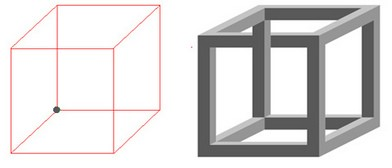

Невозможный куб — это невозможная фигура, придуманная Эшером для его литографии Бельведер. Это двумерная фигура, которая внешне напоминает перспективу трёхмерного куба, несовместимую с реальным кубом. На литографии Бельведер мальчик, сидящий у основания здания, держит невозможный куб. Рисунок аналогичного куба Неккера лежит у его ног, в то время как само здание содержит те же свойства невозможного куба
Куб Неккера
Невозможный куб заимствует двусмысленность куба Неккера, в котором рёбра нарисованы в виде отрезков, и который можно интерпретировать в одном из двух различных трёхмерных ориентаций.
Невозможный куб обычно рисуется как куб Неккера, в котором рёбра (отрезки) заменены кажущимися цельными брусками.
В литографии Эшера верхние четыре соединения брусков и верхнее пересечение брусков соответствуют одной из двух интерпретаций куба Неккера, в то время как нижние четыре соединения и нижнее пересечение соответствуют другой интерпретации. Другие вариации невозможного куба комбинируют эти свойства другими способами. Например, один из кубов на рисунке содержит все восемь соединений согласно одной из интерпретаций куба Неккера, а оба пересечения соответствуют другой интерпретации.
Кажущаяся цельность брусков даёт невозможному кубу большую визуальную двусмысленность, чем куб Неккера, который с меньшими шансами воспринимается как невозможный объект. Иллюзия играет на интерпретации человеческим глазом двумерного рисунка как трёхмерного объекта. Трёхмерные объекты могут казаться невозможными, если смотреть на них под определённым углом и, либо сделав на объекте в нужном месте разрезы, либо при использовании изменённой перспективы, но человеческий опыт с прямоугольными объектами делает невозможное восприятие более вероятным, чем иллюзии в реальности.